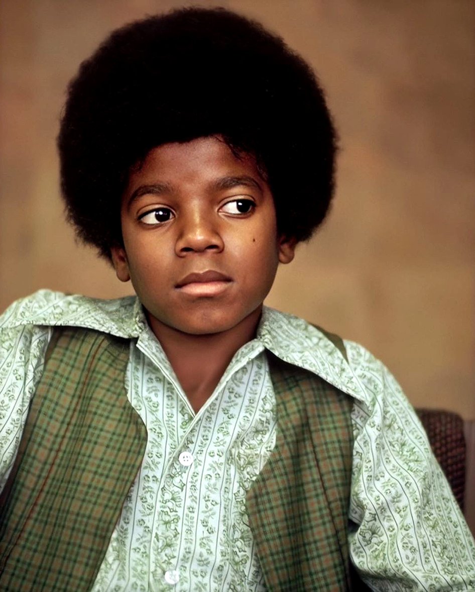
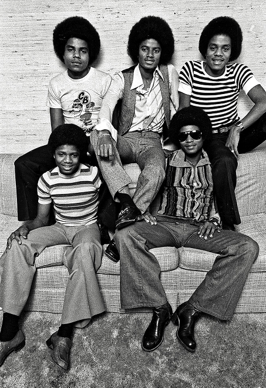
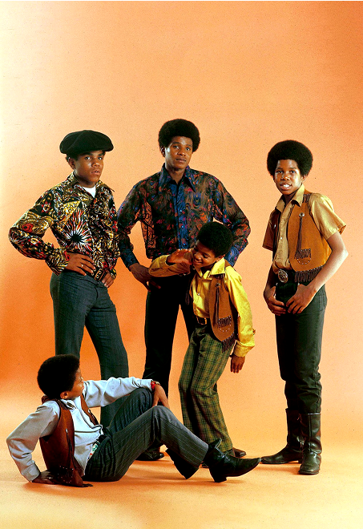
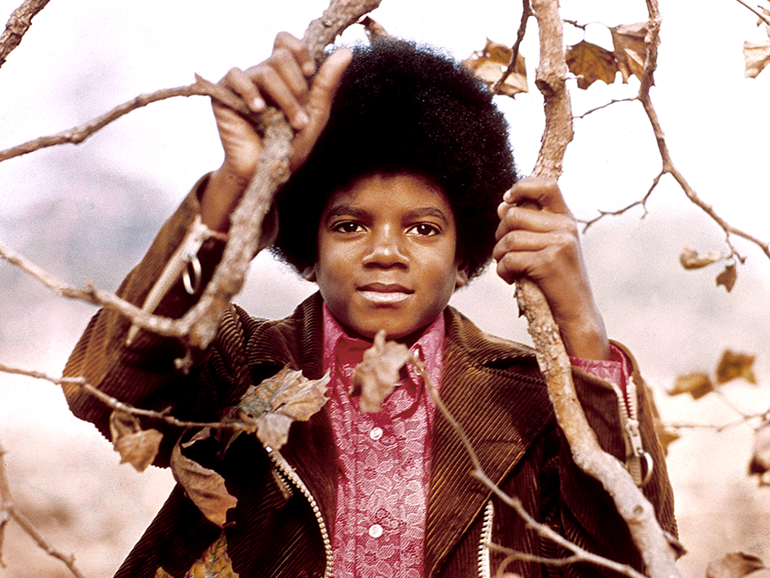
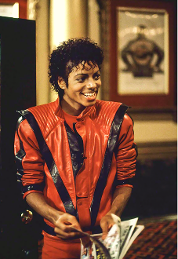
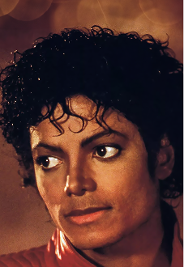
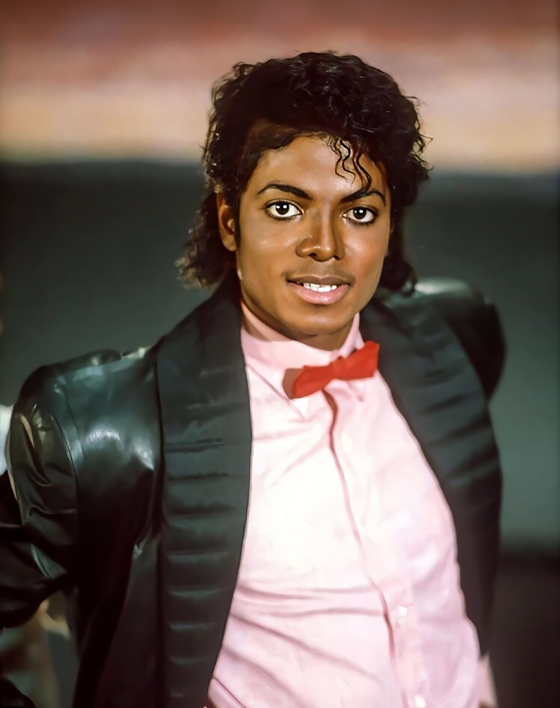

The story of
the King of Pop
Michael
Jackson
Born August 29, 1958, Gary, Indiana,
Died June 25, 2009, Los Angeles, California
Known as the "King of Pop," Michael Jackson, american singer, songwriter, and dancer, was the most popular entertainer in the world in the early and mid‑1980s.
As a child, Michael became the lead singer of his family's popular Motown group, the Jackson 5. He went on to a solo career of astonishing worldwide success, delivering No. 1 hits from the albums Off the Wall, Thriller, and Bad.
Thriller remains one of the best-selling albums in history. In his later years, Michael was dogged by allegations of child molestation. The 13-time Grammy Award winner died in 2009 at age 50 of a drug overdose just before launching a comeback tour.
Michael Joseph Jackson was born on August 29, 1958, in Gary, Indiana. He was the eighth of 10 children born to Joseph Jackson, a crane operator, and Katherine Jackson, a homemaker and a devout Jehovah's Witness. Both of Jackson's parents previously had musical aspirations themselves: Katherine played clarinet and piano and had aspired to be a country singer, while Joseph was a guitarist who performed in local R&B bands. They encouraged their children to pursue musical ambitions, and Michael's career in music began at the age of 5 under his father's encouragement.

Almost all of Jackson's siblings made marks in the music industry, including Rebbie, Jackie, Tito, Jermaine, La Toya, Marlon, Randy, and Janet Jackson. His brother Brandon, Marlon's twin, died shortly after birth. Joseph pushed his children hard to succeed, making them rehearse five hours a day after school, and was reportedly known to become violent with them. He was said to beat them with a belt buckle or electric kettle cord and to order them to break a branch off a tree if they got a dance step wrong so he could hit them with it.
Joseph molded his sons into a musical group in the early 1960s that would later become known as the Jackson 5. At first, the Jackson Family group consisted of Jackson's older brothers Tito, Jermaine, and Jackie. Michael joined his siblings when he was 5 years old and emerged as the group's lead vocalist. He showed remarkable range and depth for such a young performer, impressing audiences with his ability to convey complex emotions. They officially became the Jackson 5 when older brother Marlon joined the group.

Jackie, Marlon, Randy, Tito and Michael of the Jacksons 5 pose for a studio group portrait in 1977 in Amsterdam, Netherlands.
Michael and his brothers spent endless hours rehearsing and polishing their act. At first, the Jackson 5 played local gigs and built a strong following. They recorded one single on their own, "Big Boy", with the B-side "You've Changed", but the record failed to generate much interest. The group moved on to working as the opening act for R&B artists such as Gladys Knight and The Pips, James Brown, Sam and Dave. Many of these performers were signed to the legendary Motown record label, and the Jackson 5 eventually caught the attention of Motown founder Berry Gordy.



Impressed by the group, Gordy signed the group to his label in early 1969. Michael and his brothers moved to Los Angeles, where they lived with Gordy and with Diana Ross of the Supremes as they got settled. The Jackson 5 made its first television appearance during the 1969 Miss Black American Pageant, performing a cover of "It's Your Thing". Their first album, Diana Ross Presents the Jackson 5, hit the charts in December 1969, with the single "I Want You Back" reaching No. 1 on the Billboard Hot 100 chart shortly afterward.

Michael Jackson poses for a photoshoot at his Hollywood Hills home on April 20, 1972 in Los Angeles California.
More chart-topping singles quickly followed, such as "ABC", "The Love You Save", and "I'll Be There". For several years, Michael and the Jackson 5 maintained a busy tour and recording schedule, under the supervision of Gordy and his Motown staff. The group became so popular that it even had its own self-titled cartoon show, which ran from 1971 to 1972. Michael also popularized the "robot dance" after using the move during a 1973 performance of the song "Dancing Machine" on The Mike Douglas Show.
Despite the group's great success, there was trouble brewing behind the scenes. Tensions mounted between Gordy and Joseph over the management of his children's careers, with the Jacksons wanting more creative control over their material. The group officially severed ties with Motown in 1976, though Jermaine remained with the label to pursue his solo career. Now calling themselves the Jacksons, the group signed a new recording deal with Epic Records. By the release of its third album for the label, Destiny (1978), the brothers had emerged as talented songwriters.

The Jackson 5
in Santa Monica 1969
Jackie, Marlon, Randy, Tito and Michael of the Jacksons 5 pose for a studio group portrait in 1977 in Amsterdam, Netherlands.
Michael Jackson poses for a photoshoot at his Hollywood Hills home on April 20, 1972 in Los Angeles California.
The Jackson 5
in Santa Monica 1969
Day and Night

Michael began his solo career while simultaneously performing with the Jackson 5. He released his debut solo album at age 13 with Got to Be There (1971), making the charts with the title track. He had his first solo No. 1 single with the title track from his sophomore album Ben (1972), which he recorded for the 1972 film of the same name about a killer rat. Michael followed those albums with Music and Me (1973) and Forever, Michael (1975), the latter of which was his last album with Motown Records.
As Michael's stardom rose, he tried his hand at acting, and the experience left its mark on his music, too. Michael portrayed the Scarecrow in the Sidney Lumet directed film The Wiz (1977), starring alongside Diana Ross and Nipsey Russell. While living in New York City to make the film, Michael frequently visited the Studio 54 nightclub and was exposed to early hip-hop music, which contributed to his beatboxing in future songs like "Workin’ Day and Night".
Michael achieved his solo career breakthrough with Off the Wall (1979), his first album with Epic Records and his first produced by Quincy Jones, whom he met while working on The Wiz. An infectious blend of pop and funk, Off the Wall featured the Grammy Award–winning single "Don't Stop 'Til You Get Enough", along with such hits as "Rock with You", "She's Out of My Life", and the title track. Critics felt the album moved Michael from the pop music of his youth into a more complex sound, and some have called it one of the best pop albums ever made.
Michael was still performing with his brothers at this time, and the overwhelmingly positive response to Off the Wall helped the Jacksons as a group. Their album Triumph (1980) sold more than 1 million copies, and the brothers went on an extensive tour to support the recording. At the same time, Michael continued exploring more ways to branch out on his own. In 1983, Michael embarked on his final tour with his brothers to support the album Victory (1984). Michael's duet with Mick Jagger called "State of Shock" was the most successful single from the album.
Off
the Wall

Product with Quincy Jones for this solo breakthrough a disco-era masterpiece propelled by gleaming melodies, compulsive grooves and some of Michael's most spectacular performances.

Thriller (1982), Michael Jackson's 6th solo album, was an unprecedented success. Today, in 2023, it's still recognized by Guinness World Records as the best-selling album of all time.


Thriller having sold 67 million copies worldwide and 34 million units in the United States alone. The album stayed on the charts for 80 weeks after its release, holding the No. 1 spot for 37 weeks, and generated seven Top 10 hits, including "Thriller", "Billie Jean", "Beat It", "Human Nature", "Wanna Be Startin' Somethin", and "P.Y.T. (Pretty Young Thing)".
The album garnered 12 Grammy Award nominations and notched eight wins, both records at the time. Michael also filmed an elaborate music video for the album's title track. Directed by filmmaker John Landis, the 14-minute "Thriller" mini-movie features a horror plot that culminates with Michael dancing with dozens of zombies in an abandoned city street.
Following its debut on MTV on December 2, 1983, it was hailed as one of the greatest music videos of all time and became the first music video to be selected for the National Film Registry in 2009.
On a 1983 television special honoring Motown, Michael performed his No 1 hit "Billie Jean" and debuted the moonwalk, which became one of his signature moves.
The dance step, which R&B musician Jeffrey Daniel had taught him three years earlier, involves the dancer gliding backwards despite bodily actions that suggest. The much-lauded dance performance further boosted sales for the already-successful Thriller album.
The New York Times hailed Michael as a "musical phenomenon," writing: "In the world of pop music, there is Michael Jackson and there is everybody else."
